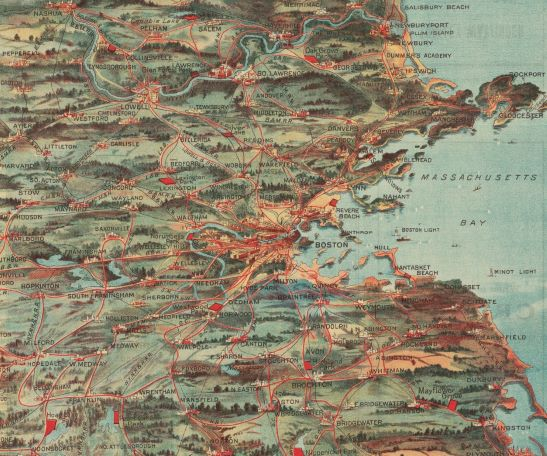
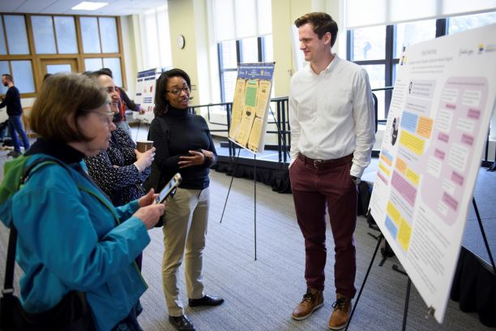

All Projects

Jun 2019–Aug 2019
Full Text at Harvard Library
I led a project to develop a new content access feature during an internship at Harvard Library.

Jan 2019–Apr 2020
Supporting the Research Lifecycle at the University of Michigan Library
Our IMLS-funded research lab investigated library support for qualitative researchers.

Aug 2018–Apr 2020
Humanities Open Book at the University of Michigan Press
I curated metadata and advised authors during an NEH/Mellon digitization grant.

Jun 2016–Aug 2018
Copyediting
As a copyeditor for university presses and authors, I edited over 1.7 million words to Chicago style.